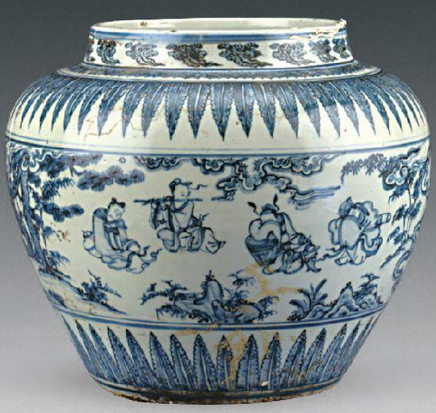

2024年北京中考历史 第8题8. “南海西北陆坡一号、二号沉船遗址”是2023年我国十大考古发现之一。该遗址位于海南岛与西沙群岛之间的南海海底，出水了大量明代瓷器。这一考古发现（ ）遗址出水的青花人物纹罐①反映我国人民在南海地区活动 ②是海上丝绸之路贸易往来的见证③可用于研究明代的瓷器烧制工艺 ④印证明代引进了原产美洲的玉米A. ①②③B. ①②④C. ①③④D. ②③④
 活动 ②是海上丝绸之路贸易往来的见证
活动 ②是海上丝绸之路贸易往来的见证